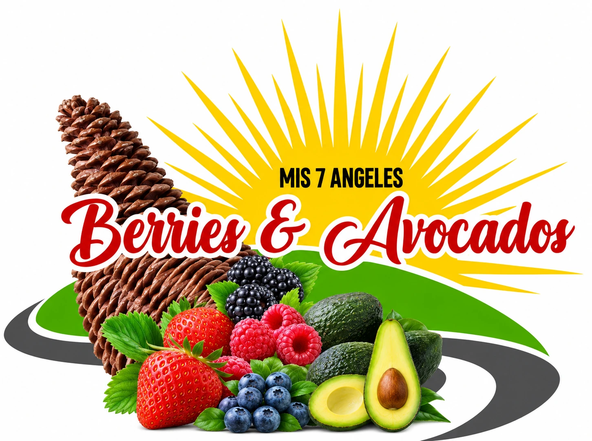
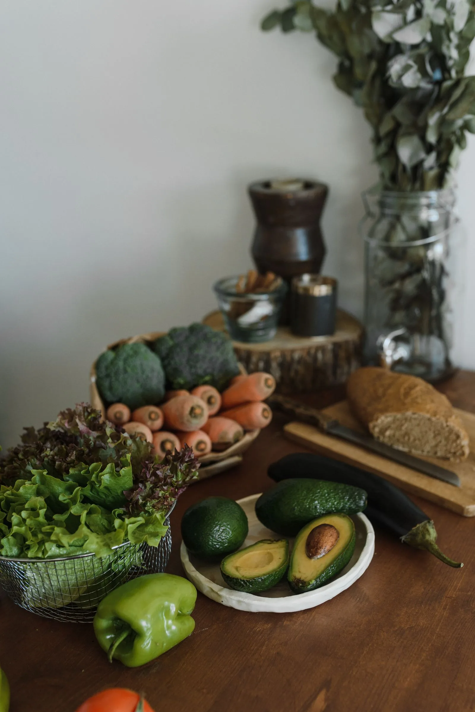
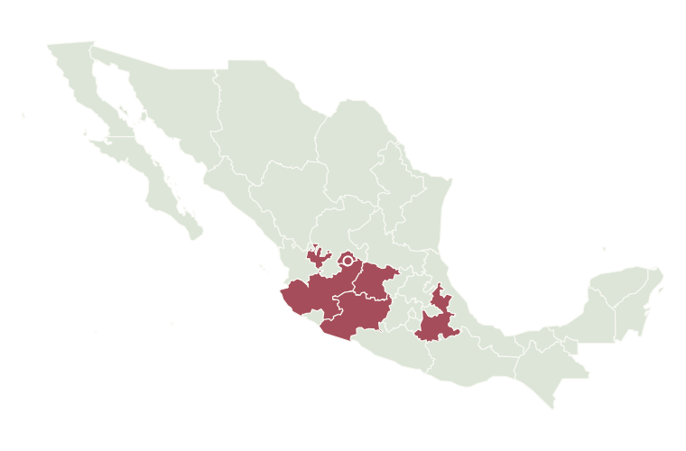
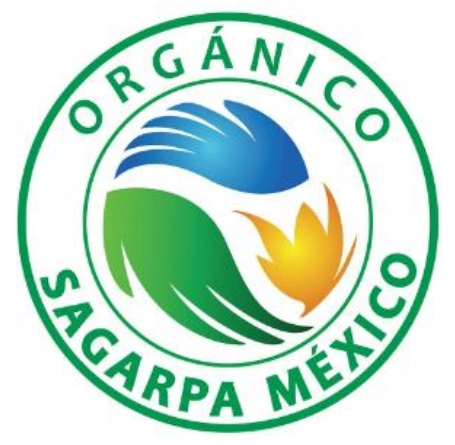
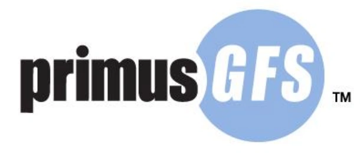
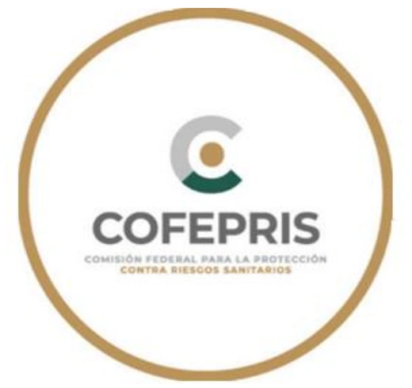
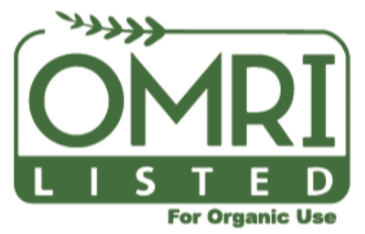

Berries
Fresa, zarzamora, arándano y frambuesa.
Desde Zamora, Michoacán
En Zamora, Michoacán, trabajamos con productores y equipos de campo, calidad y logística para ofrecer berries, aguacate y otras cosechas.
Quiénes somos
Somos una empresa establecida en Zamora, Michoacán. Trabajamos con agricultores y proveedores de distintas regiones, junto a un equipo que conoce el campo, la calidad y la logística.
Queremos crecer sin perder el trato cercano con las personas que hacen posible cada cosecha.
Así trabajamos
Nuestros productos
Frutos rojos, aguacate y otros cultivos de nuestra red de productores.
Fresa, zarzamora, arándano y frambuesa.

De Michoacán y Jalisco.

Higo, piña, mango, papaya, limón, brócoli y otras hortalizas.

Nuestro origen
La actividad de campo se extiende por cinco estados. Nuestros centros de enfriamiento están en Zamora y Ziracuaretiro, Michoacán.
Conoce nuestras regionesPresencia en el campo
Una red de productores que conecta distintas regiones agrícolas de México.

Fresa, zarzamora, arándano, frambuesa, aguacate, higo, piña, mango, papaya, limón y brócoli.
Fresa, zarzamora, arándano, frambuesa, aguacate, higo, piña, mango, papaya, limón y brócoli.
Fresa, zarzamora, arándano, frambuesa y hortalizas.
Arándano silvestre y hortalizas.
Fresa y brócoli.
Mapa elaborado a partir de límites estatales de INEGI, distribuidos por mx-geo.
Nuestra forma de trabajar
El trabajo comienza con quienes conocen la tierra y cuidan cada cultivo.
En Zamora y Ziracuaretiro, el equipo recibe y atiende la fruta después de la cosecha.
Personal de campo, calidad y logística coordina el trabajo para atender cada pedido.
Calidad documentada
Nuestra red comparte constancias orgánicas y documentación GLOBALG.A.P. para berries, según el productor y el cultivo.
Constancias de conformidad orgánica bajo el programa USDA NOP, emitidas a un productor de nuestra red.
La documentación de un productor aliado abarca fresa, arándano y zarzamora; SCS Global Services figura como certificadora.
Compartimos la documentación aplicable a cada producto y verificamos su vigencia antes de cerrar un pedido.




Nuestra operación
Contacto
Si buscas fruta para tu negocio o quieres trabajar con nosotros, escríbenos.